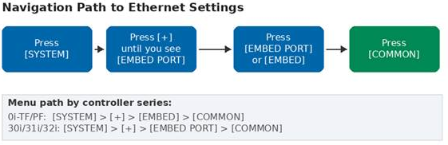
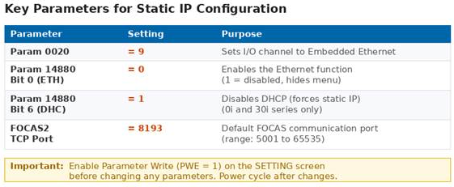
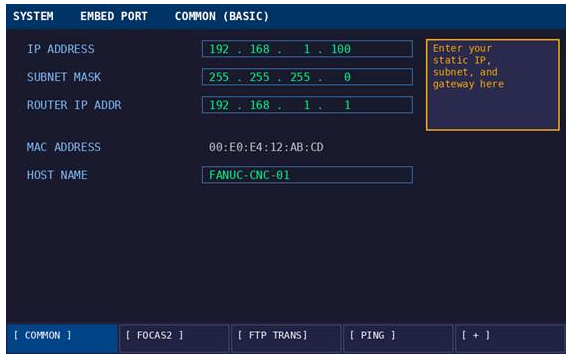
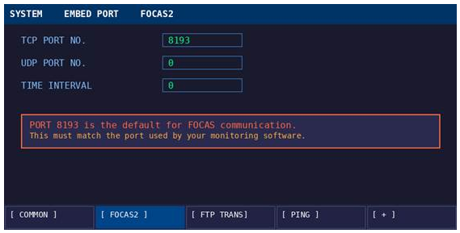
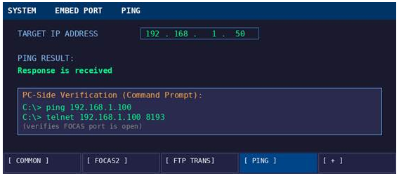
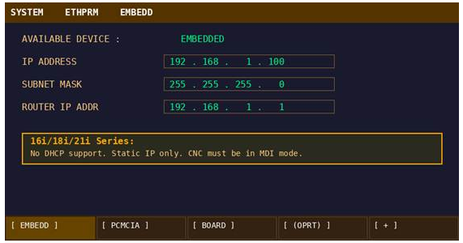

Need to set a static IP or do a FOCAS test? You're in the right place.
This guide walks through setting a static IP on Fanuc CNC controllers, covering the 0i-TF/PF, 30i/31i/32i, and 16i/18i/21i series. A static IP is the first step toward connecting your machine to monitoring software, DNC systems, or FOCAS-based data collection.
Note: Most Fanuc controllers manufactured after 2005 include embedded Ethernet as standard. Older machines may need an optional Ethernet board or PCMCIA card.
1. Check Your Hardware
Before configuring anything, confirm which Ethernet interface your controller has. Look at the back of the control unit for an RJ-45 port (standard network cable connector).
| Interface | Found On | Max Connections |
|---|---|---|
| Embedded Ethernet (standard) | 0i-D/F/TF/PF, all 30i, most 18i-B+ | 5 clients |
| Fast Ethernet Board (option) | Installed in option slot | 20 clients |
| PCMCIA Ethernet Card | Memory card slot (temporary use) | 1 client |
The embedded Ethernet port uses connector CD38A on the control unit or CD38S on the display unit. Plug in a standard Ethernet cable and confirm the link light is active.
2. Navigate to the Ethernet Settings
The menu path differs slightly depending on your controller series, but the concept is the same: get to the SYSTEM screen and find the Ethernet soft key.

0i-TF/PF and 30i/31i/32i Series
- Press the [SYSTEM] hard key on the operator panel
- Press the [+] continue key (right arrow) repeatedly
- Look for [EMBED] or [EMBED PORT] in the soft key bar
- Press it, then press [COMMON] to see IP settings
16i/18i/21i Series
- Press [SYSTEM], then scroll with the continue key
- Look for [ETHPRM] instead of [EMBED PORT]
- Press [ETHPRM], then [EMBEDD] for the embedded port
Note: On the 16i/18i/21i, the CNC must be in MDI mode to edit Ethernet settings.
3. Set the Static IP Address
Enable Parameter Write
Before making changes, go to the SETTING screen and set PWE (Parameter Write Enable) to 1. Without this, the controller will reject your edits.
Configure Key Parameters

Set these parameters first:
Parameter 0020 = 9— selects Embedded Ethernet as the I/O channelParameter 14880 Bit 0 (ETH) = 0— enables Ethernet; setting to 1 disables it and hides the menuParameter 14880 Bit 6 (DHC) = 1— disables DHCP, forcing static IP mode; 0i and 30i only
Note: If the [EMBED] or [EMBED PORT] soft key is missing, Parameter 14880 Bit 0 is almost certainly set to 1. This is the most common issue reported by technicians.
Enter the IP Address
Navigate to the COMMON screen under EMBED PORT (or ETHPRM on 16i/18i/21i). You will see fields for IP Address, Subnet Mask, and Router IP Address.

Use the MDI keys to type each octet and press [INPUT] after each field. A typical shop floor setup might look like:
| Field | Example Value |
|---|---|
| IP Address | 192.168.1.100 |
| Subnet Mask | 255.255.255.0 |
| Router IP (Gateway) | 192.168.1.1 |
Coordinate with your IT department or network administrator to get an available IP address on your shop floor network. Make sure it does not conflict with any other device.
4. Configure the FOCAS2 Port
FOCAS (Fanuc Open CNC API Specification) is how monitoring software communicates with Fanuc controllers. It runs over TCP and needs a port number configured on the controller.

Navigate to the [FOCAS2] soft key (under EMBED PORT) and set:
TCP Port = 8193(this is the standard default)UDP Port = 0Time Interval = 0
Note: Port 8193 must match what your monitoring or data collection software expects. Most FOCAS-based tools use 8193 by default.
5. Power Cycle the Controller
Changes to IP settings and parameters do not take effect until the controller is restarted. You have two options:
- Full power cycle: Turn the machine off and back on. This is the safest approach.
- Software restart (0i/30i only): Navigate to [EMBED PORT] > [COMMON] > [(OPRT)] > [RESTART] > [EXECUTE]. This restarts the Ethernet stack without powering down the whole machine.
Note: A software restart will drop any active Ethernet connections. Do not use it while a DNC program is transferring.
6. Verify the Connection
After the controller restarts, verify that the network is working from both sides.
From the Fanuc Controller
Navigate to [EMBED PORT] > [PING]. Enter the IP address of a PC on the same network and press [P.EXEC]. A successful result displays "Response is received".

From a PC on the Same Network
Open a Command Prompt and run:
ping 192.168.1.100Then verify the FOCAS port is reachable:
telnet 192.168.1.100 8193If ping works but telnet fails, the FOCAS port is likely not set correctly, or the FOCAS option is not activated on the controller.
7. 16i/18i/21i Series Differences
If you are working with the older 16i, 18i, or 21i controllers, there are a few important differences to be aware of.

- No DHCP support. These controllers only support static IP. There is no DHCP parameter to toggle.
- Different menu path. Use [ETHPRM] > [EMBEDD] instead of [EMBED PORT] > [COMMON].
- MDI mode required. The controller must be in MDI mode to edit network settings.
- 7-segment LED reset. If you cannot access the settings screen (forgotten IP), hold the push switch on the main board for 5 seconds and release at number "2" to reset embedded Ethernet to factory defaults (192.168.1.1, port 8193).
- 21i-B limitation. The Series 21i-B cannot use embedded Ethernet at all. It requires a PCMCIA card or option board.
8. Troubleshooting
| Problem | Cause | Fix |
|---|---|---|
| [EMBED] soft key missing | Param 14880 Bit 0 = 1 | Set Bit 0 to 0 and power cycle |
| Ping fails from PC | Subnet mismatch | Verify CNC and PC are on the same subnet |
| Ping works but FOCAS fails | Port not set or FOCAS not activated | Set FOCAS TCP port to 8193; confirm FOCAS option is enabled |
| DHCP ERROR on screen | No DHCP server found | Set Param 14880 Bit 6 = 1 for static IP |
| Intermittent connection drops | CNC on busy network | Use a dedicated subnet or VLAN for CNC machines |
| Windows PC cannot connect | Firewall blocking port | Add inbound rule for TCP 8193 in Windows Firewall |
9. Connect to Your Monitoring System
Once your Fanuc controller has a static IP and FOCAS is responding on port 8193, it is ready to add to a production monitoring system or SCADA.
Over FOCAS2, a monitoring platform can automatically read spindle speed, feed rates, axis positions, alarm states, part counts, cycle times, and program information. This data feeds into live dashboards, automated alerts, and historical trend analysis.
Conclusion
Setting a static IP on a Fanuc CNC is straightforward once you know where to look. The core steps are the same across all series: access the Ethernet screen under SYSTEM, enter your IP/subnet/gateway, set the FOCAS port to 8193, and power cycle. The 16i/18i/21i family uses a slightly different menu path ([ETHPRM] instead of [EMBED PORT]) and lacks DHCP, but the actual IP entry process is identical.
If you run into issues, start with Parameter 14880 Bit 0. That single bit being wrong accounts for the majority of connectivity problems on Fanuc machines.